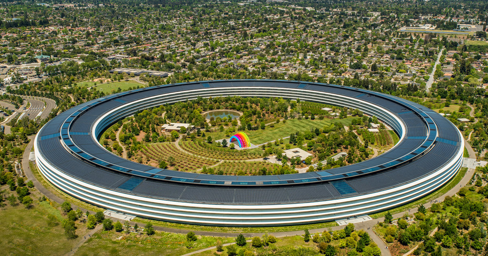

Campus Overview
Designed for Creativity and Collaboration
Apple Park is the corporate headquarters of Apple Inc., located in Cupertino, California. It was envisioned by Steve Jobs with a focus on integrated design and environmental harmony. The main building, often referred to as "the Ring," is a circular structure housing thousands of employees.
The campus features vast green spaces, a large artificial pond, and walking and jogging trails. The design emphasizes open space, natural light, and a connection to the surrounding landscape, aiming to foster innovation and employee well-being.
A Visionary Design Philosophy
The architectural philosophy behind Apple Park revolves around blurring the lines between building and nature. Every element, from the massive curved glass panels of the Ring to the meticulous landscaping, reflects Apple's attention to detail and commitment to excellence.

Open workspaces are designed to encourage serendipitous encounters and idea-sharing. The entire campus is crafted to feel more like a park than a traditional office complex, promoting a healthy and inspiring work environment.